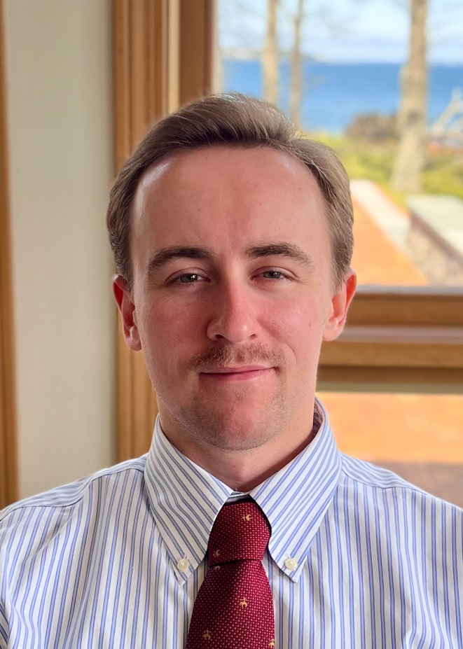

<!DOCTYPE html>
<html lang="en">
<head>
    <meta charset="UTF-8">
    <meta name="viewport" content="width=device-width, initial-scale=1.0">
    
    <link rel="icon" type="image/x-icon" href="favicon.ico">
    <link rel="stylesheet" href="/style.css">
    
    <title>Home</title>
</head>
<body>
    <div class="wrapper">
        <div class="main-content">
            <div class="page-content">
                
                <h3 style="text-align: center; margin: 0; padding-top: 10px;">Elliot Vosburgh</h3>
                <p style="text-align: center; margin: 5px 0; font-style: italic;">Geospatial Consultant ~ Rhode Island, USA</p>
                <div class="front-blurb">
					<p align="justify">
						I am interested in applied geospatial science, especially how remote sensing technology can be used to further our understanding of natural hazards and natural resources. Additionally, I am the founder of the Rhode Island Stone Wall Mapping Project. I have extensive experience in geospatial analysis and data collection, and am particularly experienced in working with LiDAR and multispectral data.
					</p>
					<p align="justify">
						I received my Bachelor of Science in Biological Sciences in 2018 from the University of Rhode Island (URI). After graduating with my Master's degree from URI in 2024, I worked on grant-funded projects in natural resources mapping and environmental analysis in the lab of Dr. Jason Parent. I also began working with small clients as an independent consultant. Later that year I was hired as a Research Associate at URI, where I worked on projects funded by the National Park Service (USA), among others.
					</p>
					<p align="justify">
						Most recently, I was accepted into the Geography (PhD) program at McGill University in Montréal, Canada, to work in the Applied Remote Sensing Lab. In this position I will be researching the remote sensing of wildfires under Dr. Margaret Kalacska.
					</p>
				</div>
            </div>
        </div>
        <nav>
            <ul>
                <li><a href="/">home</a></li>
                <li><a href="/projects/">projects</a></li>
                <li><a href="https://www.linkedin.com/in/elliotvosburgh/">linkedin</a></li>
            </ul>
        </nav>
    </div>
</body>
</html>
